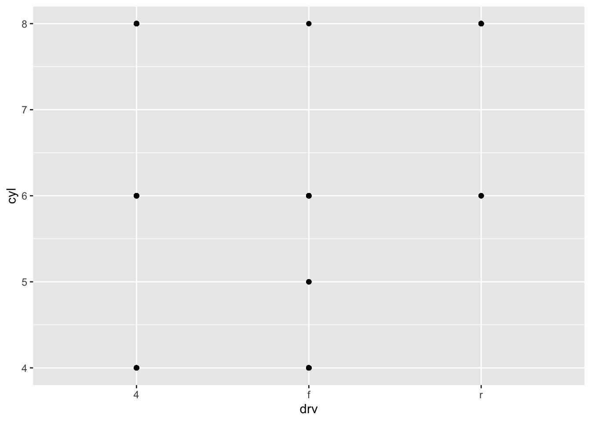
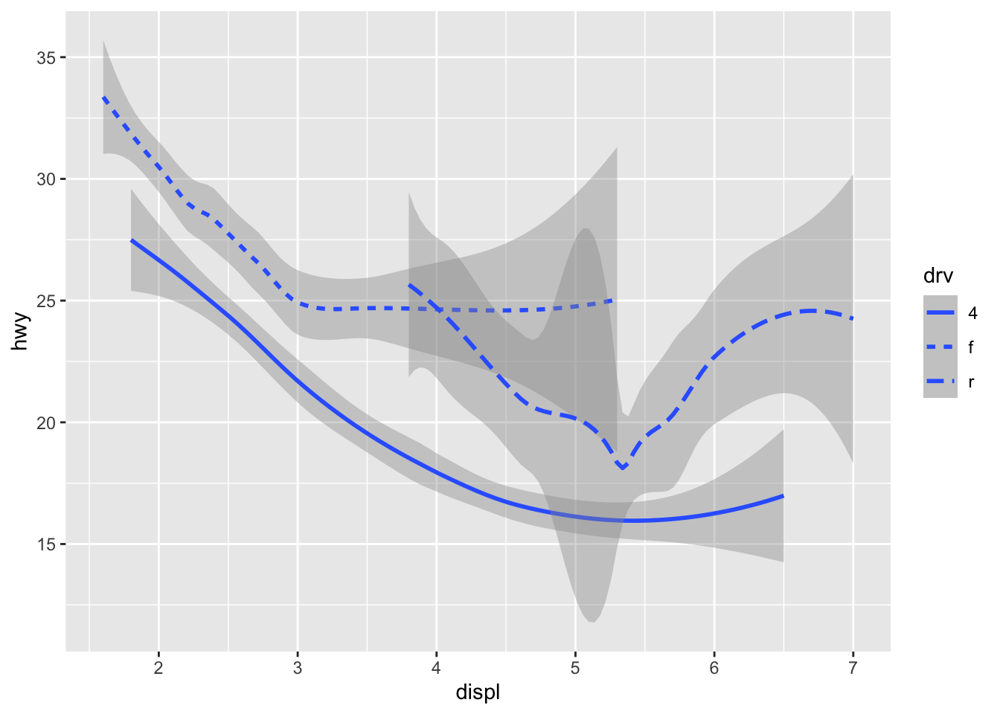
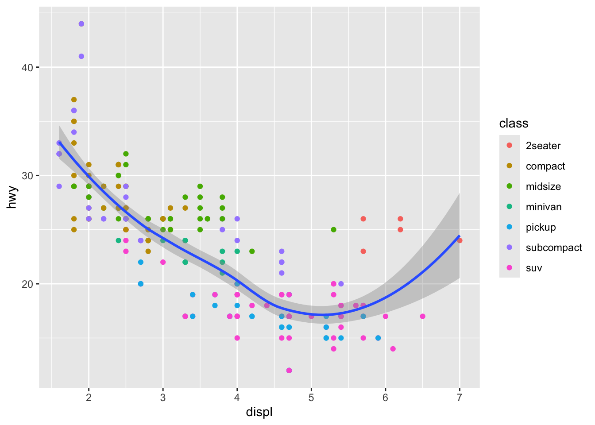

Show code
knitr::opts_chunk$set(warning = FALSE, message = FALSE) These are examples and exercises from Chapter 3 of R for Data Science, by Hadley Wickham and Garret Grolemund.
1. Set UpThis first chunk will remove warning messages from all chunks in this file. To hide this chunk use include=FALSE within the {} brackets.
knitr::opts_chunk$set(warning = FALSE, message = FALSE) This second chunk calls two packages:
tidyverse: to tidy data and create visuals with ggplot2.
gridExtra: to arrange data in a grid
library(tidyverse)
library(gridExtra)This chapter analyzes the mpg data so I’m using the head() function from utils to view the first five rows in the mpg data set.
utils::head(mpg, 5)# A tibble: 5 × 11
manufacturer model displ year cyl trans drv cty hwy fl class
<chr> <chr> <dbl> <int> <int> <chr> <chr> <int> <int> <chr> <chr>
1 audi a4 1.8 1999 4 auto(l5) f 18 29 p compa…
2 audi a4 1.8 1999 4 manual(m5) f 21 29 p compa…
3 audi a4 2 2008 4 manual(m6) f 20 31 p compa…
4 audi a4 2 2008 4 auto(av) f 21 30 p compa…
5 audi a4 2.8 1999 6 auto(l5) f 16 26 p compa…2. Visuals\(\underline{\text{Question 1}}\): Do cars with big engines use more fuel than cars with small engines?
To answer this question I will focus on two columns:
displ : a cars engine size in litres
hwy : a car’s fuel efficiency on the highway in mpg.
ggplot2::ggplot(data = mpg) +
ggplot2::geom_point(mapping = ggplot2::aes(x = displ, y = hwy))
Note:
There is a negative relation between engine size and fuel efficiency.
The mapping argument is always paired with aes(), and the x and y arguments of aes() specify which variables to map to the x and y axes.
3. 3.2.4 Exercisesggplot2::ggplot(data = mpg)
The mpg data set has 234 rows and 11 columns.
The drv variable is the type of drive the car has such as f = front wheel, r = rear wheel, and 4 = 4 wheel drive.
The following plot shows hwy vs. cyl.
ggplot2::ggplot(mpg) +
ggplot2::geom_point(ggplot2::aes(x = cyl, y = hwy))
Note: This isn’t very useful because it is obvious that as the number of cylinders increases the miles per gallon decreases.
ggplot2::ggplot(mpg) +
ggplot2::geom_point(ggplot2::aes(x = drv, y = class))
Note: This plot isn’t useful because there are no obvious trends. Categorical variables usually have a small number of values they are limited to, so it only seems like there are 12 observed values.
4. AestheticsWithin the aes() function when specifying that color is equal to a column variable then ggplot will add a color key to these variables, as shown below.
ggplot2::ggplot(data = mpg) +
ggplot2::geom_point(mapping = ggplot2::aes(x = displ, y = hwy, color = class))
When defining color outside aes() then color is equal to a specific color (such as red or blue), and ggplot will make all points that one color, as shown below.
ggplot2::ggplot(data = mpg) +
ggplot2::geom_point(mapping = ggplot2::aes(x = displ, y = hwy), color = "blue")
size:
ggplot2::ggplot(data = mpg) +
ggplot2::geom_point(mapping = ggplot2::aes(x = displ, y = hwy, size = class))(Warning: using size for a discrete variable is not advised.)
alpha: (transparency)
ggplot2::ggplot(data = mpg) +
ggplot2::geom_point(mapping = ggplot2::aes(x = displ, y = hwy, alpha = class))shape:
ggplot2::ggplot(data = mpg) +
ggplot2::geom_point(mapping = ggplot2::aes(x = displ, y = hwy, shape = class))

5. 3.3.1 Exercisesggplot2::ggplot(data = mpg) +
ggplot2::geom_point(mapping = ggplot2::aes(x = displ, y = hwy, color = "blue"))
# Categorical
ggplot2::ggplot(data = mpg) +
ggplot2::geom_point(mapping = ggplot2::aes(x = displ, y = manufacturer, color = trans))# Continuous
ggplot2::ggplot(data = mpg) +
ggplot2::geom_point(mapping = ggplot2::aes(x = displ, y = manufacturer, color = hwy))
ggplot2::ggplot(data = mpg) +
ggplot2::geom_point(mapping = ggplot2::aes(x = displ, y = hwy, size = hwy, color = displ))ggplot2::ggplot(mtcars, ggplot2::aes(wt, mpg)) +
ggplot2::geom_point(shape = 21, colour = "black", fill = "pink", size = 5, stroke = 5)
ggplot2::ggplot(data = mpg) +
ggplot2::geom_point(mapping = ggplot2::aes(x = displ, y = hwy, color = displ < 5))6. Facetsfacet_wrap() should be used for discrete values as shown below:
ggplot(data = mpg) +
geom_point(mapping = aes(x = displ, y = hwy)) +
facet_wrap(~ class, nrow = 2)
To facet on a combination of variables use facet_grid() as shown below:
ggplot(data = mpg) +
geom_point(mapping = aes(x = displ, y = hwy)) +
facet_grid(drv ~ cyl)
Use + facet_grid(.~cyl) to not facet rows.
ggplot(data = mpg) +
geom_point(mapping = aes(x = displ, y = hwy)) +
facet_grid(.~ cyl)
7. 3.5.1 Exercisesggplot(data = mpg) +
geom_point(mapping = aes(x = displ, y = hwy)) +
facet_wrap(~ hwy)
facet_grid(drv ~ cyl) plot above are showing the empty points in the graph below. For example cars with four wheel drive only have an even number of cylinders so the plot of 4 wheel drive with 5 cylinders is empty because it does not exist.ggplot(data = mpg) +
geom_point(mapping = aes(x = drv, y = cyl))
# rows
ggplot(data = mpg) +
geom_point(mapping = aes(x = displ, y = hwy)) +
facet_grid(drv ~ .)
#columns
ggplot(data = mpg) +
geom_point(mapping = aes(x = displ, y = hwy)) +
facet_grid(. ~ cyl)
ggplot(data = mpg) +
geom_point(mapping = aes(x = displ, y = hwy)) +
facet_wrap(~ class, nrow = 2)
nrow and ncol define the number of rows and columns in the facet wrap.There is also scales, shrink, labeler, as.table, switch, drop, dir, and stip.position. Facet grid doesn’t have these because it is specified in the function instead.
Variables with more unique levels should be in columns when using facet_grid() because there is more space for columns if the plot is laid out horizontally.
8. Geometric ObjectsThe side by side graphs below show the same data. The left graph uses the geometric object geom_point() which shows all the points, and the right graphs uses geom_smooth() which creates a best fit line with the data’s standard error without all the data points.
# left graph: geom_point()
a <- ggplot(data = mpg) +
geom_point(mapping = aes(x = displ, y = hwy))
# right graph: geom_smooth()
b <- ggplot(data = mpg) +
geom_smooth(mapping = aes(x = displ, y = hwy))
# both together
grid.arrange(a,b, nrow = 1)
For different line “shapes” geom_smooth() can be used with different linetypes within aes() as shown below.
ggplot(data = mpg) +
geom_smooth(mapping = aes(x = displ, y = hwy, linetype = drv))
For the following geoms, you can set the group aesthetic to a categorical variable to draw multiple objects.
c <- ggplot(data = mpg) +
geom_smooth(mapping = aes(x = displ, y = hwy))
d <- ggplot(data = mpg) +
geom_smooth(mapping = aes(x = displ, y = hwy, group = drv))
e <- ggplot(data = mpg) +
geom_smooth(
mapping = aes(x = displ, y = hwy, color = drv),
show.legend = FALSE)
grid.arrange(c,d,e, nrow = 1)Below multiple geometric objects are added to one plot.
ggplot(data = mpg) +
geom_point(mapping = aes(x = displ, y = hwy)) +
geom_smooth(mapping = aes(x = displ, y = hwy))
Defining the mapping aes() helps reduce repetion, as shown below.
ggplot(data = mpg, mapping = aes(x = displ, y = hwy)) +
geom_point() +
geom_smooth()
Global Mapping
ggplot(data = mpg, mapping = aes(x = displ, y = hwy)) +
geom_point(mapping = aes(color = class)) +
geom_smooth()
Subcompact (subset) mapping
ggplot(data = mpg, mapping = aes(x = displ, y = hwy)) +
geom_point(mapping = aes(color = class)) +
geom_smooth(data = filter(mpg, class == "subcompact"), se = FALSE)9. 3.6.1 Exercisesline chart: geom_line()
boxplot: geom_boxplot()
histogram: geom_histogram()
area chart: geom_area()
Prediction: the below code will show the various points and lines for drv without any standard error.
ggplot(data = mpg, mapping = aes(x = displ, y = hwy, color = drv)) +
geom_point() +
geom_smooth(se = FALSE)